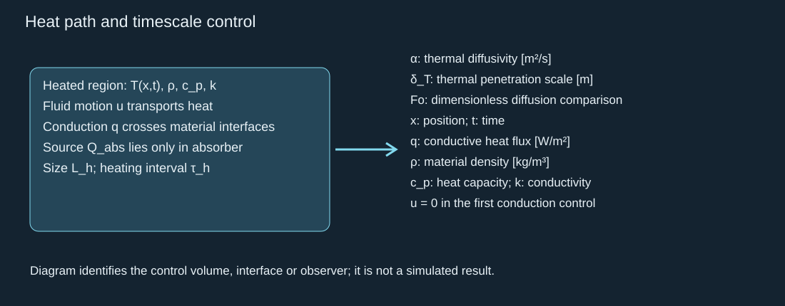

Earlier published work supplies useful PFC properties now. The recovered PFH and PFP cards support named thermal and phase reference cases while the actual formulation is being characterized. Previous simulation results are not used here.
此前已发表研究现在就能提供有用的 PFC 物性。恢复的 PFH 与 PFP 物性卡支持具名传热和相变参照算例，同时对实际配方开展表征。此处未使用先前仿真结果。
1 · Two ready constant-coefficient heat controls
1 · 两种可直接使用的常系数传热对照
Zhang et al. Table 1 lists the following values for their PF5 (PFP) and PF6 (PFH) heat-diffusion calculation. The table does not supply a verified temperature interval. Treat each row set as a literature reproduction control, then replace constant coefficients when state dependence matters. Zhang et al. (2019)
Zhang 等的表 1 给出其 PF5（PFP）及 PF6（PFH）传热计算的下列数值。该表未给出已核验的温度适用区间。将各列作为文献复现对照；当状态依赖重要时，再替换常系数。Zhang 等（2019）
Identity check: the paper’s PF6 row cites a representative commercial-PFC comparison. Its pure n-PFH identity and purity are not established by that reference. The JSON therefore leaves confirmed compound/CAS unset and retains n-PFH only as a candidate identity. Pure-compound NIST data remain a separate card.
组分检查：论文的 PF6 行引用商用 PFC 代表性比较。该引用未确立这些系数来自纯正全氟己烷及其纯度。因此 JSON 将已确认组分／CAS 留空，仅将正全氟己烷保留为候选组分。纯物质 NIST 数据保持为独立物性卡。
Property / SI unit 物性／国际单位 | PFP / PF5 PFP／PF5 | Paper-labelled PF6 论文标作 PF6 |
|---|---|---|
Density (kg/m³) 密度（kg/m³） | 1630 1630 | 1680 1680 |
Heat capacity (J/(kg K)) 比热容（J/(kg K)） | 1088 1088 | 1050 1050 |
Thermal conductivity (W/(m K)) 热导率（W/(m K)） | 0.050 0.050 | 0.057 0.057 |
Derived thermal diffusivity (m²/s) 推导的热扩散率（m²/s） | 2.819 × 10⁻⁸ 2.819 × 10⁻⁸ | 3.231 × 10⁻⁸ 3.231 × 10⁻⁸ |

Thermal diffusivity connects the material coefficients to heat transport in the labeled heated region.
热扩散率把材料系数与标注受热区域的传热联系起来。
Audit result: the paper prints water diffusivity as 0.143 m²/s. Its own conductivity, density and heat capacity give 1.433 × 10⁻⁷ m²/s, almost one million times smaller. The PFC diffusivities agree with their listed coefficients. We preserve the source error and use the consistent derived water value.
审查结果：论文印出的水热扩散率为 0.143 m²/s。但其自身热导率、密度和比热容算得 1.433 × 10⁻⁷ m²/s，约小一百万倍。PFC 的热扩散率与所列系数相符。保留原始差错记录，并使用自洽推导的水数值。
2 · Phase data and source-dependent heat capacity
2 · 相变数据与依赖来源的比热容
NIST supplies PFP normal-boiling datasets at 302.6–303.2 K, molecular mass 0.2880343 kg/mol, critical temperature 421.9 K, and temperature-bounded saturation fits. These permit a named PFP equilibrium reference; a normal boiling point still does not define nanodroplet activation. NIST PFP phase data.
NIST 提供 PFP 的正常沸点数据 302.6–303.2 K、摩尔质量 0.2880343 kg/mol、临界温度 421.9 K，以及有温度区间的饱和拟合。它们允许建立具名 PFP 平衡参照；正常沸点仍不定义纳米液滴激活。NIST PFP 相变数据。
PFH phase enthalpy in NIST is about 93.18 kJ/kg at 316 K; Wei reports 102 kJ/kg and about 20 kJ/kg sensible heat from 37 °C to its reported 56 °C boiling point. Keep these conditions and sources separate. A smaller preparation-heat requirement can improve energy allocation, but does not by itself predict a faster jet. NIST PFH; Wei 2014.
NIST 中 PFH 的相变焓在 316 K 约为 93.18 kJ/kg；Wei 报告 102 kJ/kg，以及从 37 °C 加热到其所述 56 °C 沸点所需约 20 kJ/kg 显热。保留各自条件和来源。较小的准备热需求可能改善能量分配，但本身不能预测更快射流。NIST PFH；Wei 2014。
Mendes uses PFP heat capacity 0.156 cal/(g K), equivalent to 652.704 J/(kg K), and density 1627 kg/m³. That heat capacity differs from Zhang’s 1088. PFH’s low-temperature NIST heat capacity also differs from Zhang’s constant. Retain distinct reference cards and investigate temperature/source basis; averaging them would hide the uncertainty. Mendes 2023.
Mendes 使用 PFP 比热容 0.156 cal/(g K)，换算为 652.704 J/(kg K)，密度为 1627 kg/m³。该比热容与 Zhang 的 1088 不同。PFH 的 NIST 低温比热容也与 Zhang 的常数不同。保留独立参照卡并检查温度和来源依据；取平均值会掩盖不确定性。Mendes 2023。
The independent NIST cross-check gives PFP heat capacity 188.3 J/(mol K) at 293 K, equivalent to 653.742 J/(kg K). NIST labels it interpolated data from Campos-Vallette and Diaz (1983). It is close to Mendes’ adopted value, but one datum does not establish high-temperature heat capacity or resolve Zhang’s different source/state basis. NIST PFP heat capacity.
独立 NIST 核对给出 PFP 在 293 K 的比热容 188.3 J/(mol K)，换算为 653.742 J/(kg K)。NIST 将其标为 Campos-Vallette 与 Diaz（1983）的插值数据。它接近 Mendes 采用的数值，但单个数据点不能确立高温比热容，也不能解决 Zhang 不同来源／状态依据的差异。NIST PFP 比热容。
3 · What transfers into our three architectures
3 · 哪些数据可以移入三种结构
Apply neat-PFC density and enthalpy to the PFC inventory, and carrier-liquid density and viscosity to surrounding flow. Zhang’s measured interfacial tensions—1.14 ± 0.25 mN/m for PF5 and 1.59 ± 0.16 mN/m for PF6—belong to its double-emulsion/liposome formulation, not a universal neat-PFC surface tension or hydrogel contact law.
将纯 PFC 密度和焓用于 PFC 存量，将载液密度和黏度用于周围流动。Zhang 测得的界面张力——PF5 为 1.14 ± 0.25 mN/m，PF6 为 1.59 ± 0.16 mN/m——属于其双乳液／脂质体配方，并非普适纯 PFC 表面张力或水凝胶接触定律。
Use the same named material cases across the droplet stamp, film/PVC layer and hydrogel branches. Compare heat uptake, onset statistics, finite phase conversion/reset, delivered momentum and damage. Exact batch identity, absorber/shell, high-state EOS/transport and confined activation remain inputs to characterize; they do not prevent reference calculations.
在液滴印章、膜／PVC 液层和水凝胶分支中使用相同具名材料算例。比较吸热、起始统计、有限相变／复位、传递动量及损伤。准确批次组分、吸收体／壳层、高状态下的状态方程／输运及约束激活仍需表征；它们不妨碍参照计算。
Download the recoverable material cards and source checks · Full parameter/evidence ledger · Architecture comparison.
查看可恢复的物性卡与来源检查 · 完整参数／证据清单 · 结构比较。